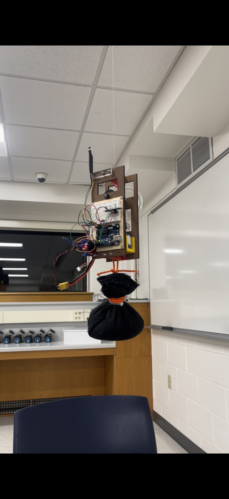

Robot in action
Rope-Climbing Robot demonstration · Open video separately
Challenge
Inspired by remote inspection tasks, this classroom project required a robot to climb a fishing line, stop near a simulated reactor, acquire temperature data, and return to the starting zone. The prototype was tested in a teaching environment.
My role
I designed and built SPIDERBOT MANTIS, integrated the motor drive and sensors, programmed the operating sequence, and iterated the design through four improvements before completing the task.
Mechanical architecture
Laser-cut wooden plates supported the robot, with 3D-printed PLA connectors, a motor holder, and a winding spool. A 20-tooth motor gear drove a 100-tooth acrylic gear on the spool shaft, providing a 5:1 reduction. The shaft used a hub and collar, and the frame included a payload attachment.
Sensing and control
An Arduino, motor controller, ultrasonic distance sensor, and temperature sensor coordinated the task. After an initial timed ascent, the robot used distance readings to approach the ceiling. It climbed at full speed beyond one meter, applied proportional speed reduction between one meter and ten centimeters, and stopped within ten centimeters to collect temperature data before descending.
Testing and outcome
The demonstrated sequence took approximately 120 seconds. Iteration shifted my focus from theoretical speed toward dependable task completion. I used isolated test code, serial-monitor readings, and wiring checks to diagnose problems in the physical system.
Project context
Developed at Bucknell University with advising from Professors Siegel, Torres, and Beal. Parts were fabricated in Bucknell MakerSpaces with support from the Department of Mechanical Engineering.
